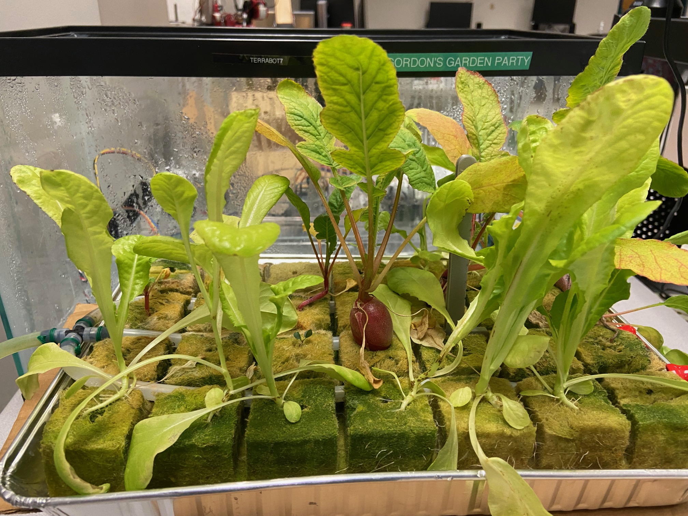
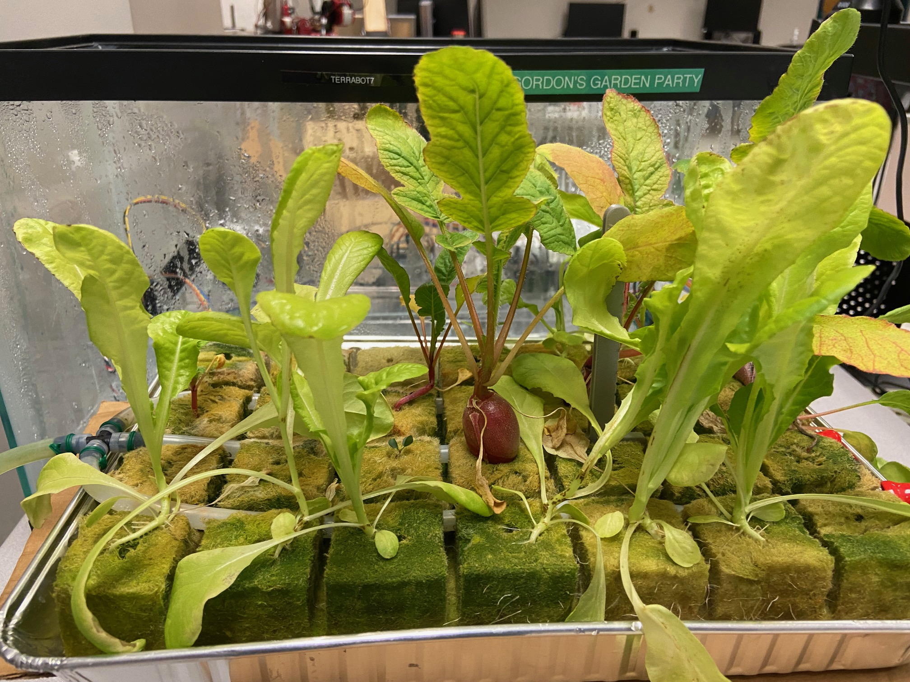

Shravya Nandyala
Hello! My name is Shravya Nandyala, and I am a fourth-year student studying Artificial Intelligence at Carnegie Mellon University. My interests are mainly in machine learning and natural language processing, and I am looking for Software Engineer and Machine Learning Engineer new grad positions. I am a fast learner who enjoys abstract, complex problems!
Projects
Autonomous Greenhouse (TerraBot)
I built an entirely autonomous greenhouse agent (known as the TerraBot) that grows lettuce and radishes over 4 week grow periods. The robot software is written in Python with ROS and pytransitions.
 

Pushkin.ai is a fine-tuned GPT transformer-based deep learning neural network to generate Russian poetry from a seed text. We had a stress module to enforce rhyme scheme, and trained on Pushkin writing data to stylize output and mimic form.
Fine-tuned T5 on SQuAD for Question Generation for question generation and BERT-SQG model for question answering, using NLTK and Yet Another Keyword Extractor Python packages.
Zebra is an open-source resource inventory, management, and reservation tool that lets authenticated users reserve any set of resources, with predefined and custom templates, metric tracking, and a template marketplace for one-click sharing of dev environments. I was project founder, lead system designer, and lead code contributor to this project, heading a team of five engineers. Zebra is being used to automate Cisco's lab inventory management and reservation system, optimizing capital expenditure and boosting developer productivity.
Stanford Sophmates Matching Algorithm
I developed a Python program for Stanford University that pairs students with their most compatible friend based on survey input. I used K-Means clustering to build a matching algorithm that mapped 600 participants in under 2 minutes. I also automated sending emails to inform participants of their matches through a Python script.
C0 Compiler
C0 is a subset of the C programming language. I am building a compiler in OCaml to result in X86-64 assembly code file generation from C code input. So far, I've implemented chordal graph construction using maximum cardinality search for SSA-based register allocation, phi functions to support branching and looping.
Work Experience
Machine Learning Infrastructure Labeling Intern
- Optimized integral task tree visualizer, reducing load time from 15+ minutes to < 5 seconds for large trees.
- Created Task Workshop, a flexible and extensible web-based tool which will eliminate 90% of all manual production database edits made by the Labeling team.
Software Engineer Intern
- Implemented algorithms to ensure all 41,000+ zip codes in the U.S. are connected at various layers of grid data.
- Proposed and executed migration of route testing to the cloud to allow for increased speed and frequency.
- Implemented use of AWS Spot Instances to automate route testing of 1 trillion routes at 50% cost reduction.
- Developed a website interface for routing team's manual testing in addition to automated tests through Jenkins.
Technical Undergraduate Intern
- Fully automated Cisco's lab inventory management and reservation system, optimizing capital expenditure and boosting developer productivity.
- Developed and managed the Zebra resource management tool, heading team of five software engineers.
Student Organizer
- Managing organizing team for AI in industry seminar series hosted by Carnegie Mellon’s AI department.
- Facilitated conversations with top industry professionals in front of 300+ person live audiences.
Undergraduate Researcher
- A community-based currency implemented with blockchain technology and the use of a public ledger, making capital available immediately to businesses and aimed at eliminating systemic bias and inequity.
- Designed production cloud environment infrastructure using AWS, Jenkins for CI/CD, and MongoDB Atlas.
Teaching Assistant
- Led recitations, bootcamps, and office hours for fundamental computer systems concepts in C programming, memory allocation, virtual memory, cache, signals, proxies, networking, etc.
- Developed written assignments and programming labs, improved course infrastructure.